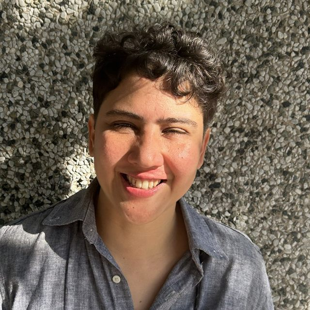

Lautaro González
Director
Arquitecto, fundraiser y gestor cultural. Desde 2018 trabaja en desarrollo institucional y financiamiento de organizaciones como Casa Brandon, Mocha Celis y SOMOSLOUD.
Quiénes somos

Director
Arquitecto, fundraiser y gestor cultural. Desde 2018 trabaja en desarrollo institucional y financiamiento de organizaciones como Casa Brandon, Mocha Celis y SOMOSLOUD.
Asociada
Socióloga (UBA) y feminista. Hace un doctorado en Antropología Social (UNSAM) y trabaja en Acceso a Derechos en Mocha Celis.
Colaboradora
Psicóloga (UBA). Cofundadora de Nómade, organización social que trabaja en temáticas de migración.
Colaborador
Productor, manager y creador de Capricho Management.
Colaboradora
Realizadora audiovisual.